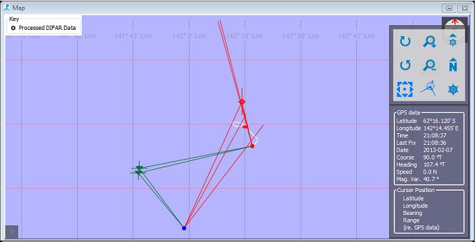
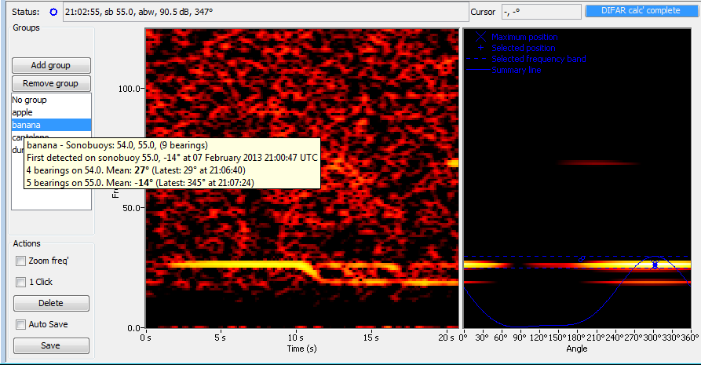
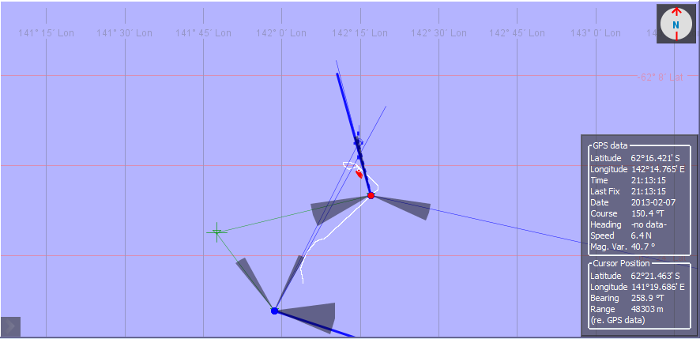

The DIFAR Localisation module has two features intended to aid the real-time localisation of whales:
1) Triangulation: the location of a calling whale can be estimated when the same call is received on two or more sonobuoys.
2) Tracked groups: a time series of bearings believed to originate from a group of calling whales can be averaged.
When more than one sonobuoy is in use, PAMGuard attempts to match each saved DIFAR clip with DIFAR clips of the same call on other sonobuoys. The location where the bearings of the matched DIFAR clips cross is the estimated location of the sound source.

When a DIFAR clip is processed, PAMGuard searches for DIFAR clips on other sonobuoys that could contain the same call. A sound cannot arrive at two sonobuoys further apart in time than the time it takes to travel between them, so only DIFAR clips within that time, plus the detection timing error, are considered. Of these, the DIFAR clips closest in time and frequency are kept, up to the Max candidates per buoy.
Each candidate match is located using both its bearings and the differences in arrival time, as described by Miller et al. (2021). A match whose bearing or timing residual exceeds its limit is rejected, since the DIFAR clips probably do not contain the same call. Of the remaining matches, the match containing the most DIFAR clips, with the lowest bearing and timing residuals, is selected automatically. The operator can override the automatic selection by choosing another match in the Triangulation match selector below the DIFARGram, or can press Clear match to save the DIFAR clip without a triangulation.
A saved match becomes a triangulation: one call received on two or more sonobuoys, with the estimated location of the sound source and the error of that location in the x and y directions. A DIFAR clip belongs to at most one triangulation. A new triangulation takes its DIFAR clips from any triangulation they belonged to. When a DIFAR clip is removed from a triangulation, the triangulation is recalculated if two or more DIFAR clips remain, and is deleted if only one remains.
From PAMGuard version 2.03, triangulations are stored only in the database. Earlier versions stored them in the binary files. Triangulations are stored in two database tables named after the module, such as "DIFAR Localisation Crossings" and its "Children" table, which lists the DIFAR clips in each triangulation. See DIFAR Output.
NB: Triangulations are calculated on a rectangular grid, whereas sound propagation over long distances typically follows a great-circle path. Triangulations that lie very far from the sonobuoys may therefore contain errors that arise from applying a rectangular grid that does not account for the curvature of the earth.
Some triangulations match the same call on different sonobuoys correctly, yet their location cannot be trusted, because the geometry is poor. These triangulations are kept and flagged rather than rejected, so that every correct match remains on record.
Crossing angle: the largest angle between any two bearings of a triangulation, from 0 to 180 degrees. Near 0 degrees the bearings point in the same direction. They cross far away, or not at all, and the location is unreliable. Near 180 degrees the bearings point towards each other. This is not poor geometry: the sound source lies between the sonobuoys, and the difference in arrival times locates it along the line between them.
On a sonobuoy: when the bearing from one sonobuoy points at another sonobuoy, the fit can settle on that second sonobuoy, where its own bearing has no meaning. The reported error there is close to zero, and reflects none of the real sources of error. A triangulation within the On-buoy radius of one of its own sonobuoys is flagged, and its errors are set to that radius. Its location is kept.
Both measures are stored with each triangulation, in the CrossingAngle and OnBuoy columns of the database. Triangulations made before these columns existed have no crossing angle until they are matched again.
Displays that use data selectors, such as the map, offer a data selector for triangulations. It is enabled by default, and hides:
Triangulations with no crossing angle are shown, since nothing is known against them.
Groups is a feature that allows the operator to semi-automatically assign a text label to bearings that are believed to originate from a closely spaced group of calling whales. Summary statistics for each group are then calculated and can be plotted on the PAMGuard Map. The Groups panel on the DifarGram is used to manage and view the list of Groups as well as assign groups to DIFAR clips.

Groups can be created and removed using the buttons. The Add group button will create a dialog-window that asks the user to type the name of a new group, and upon accepting the dialog-window the name of the new group is added to the list-box in the Groups panel. The Remove group button removes the currently-selected group's label from the list-box. When a group is removed from the list-box, new bearings cannot be assigned to that group, however the PAMGuard database and map will retain the entry for that group. Groups that have been removed can be re-added to the list-box using the Add group button and typing the name of a previously removed group. NB: Group names are case sensitive, so "Apple" and "apple" are considered two different groups. The default group "No group" is always present in the list-box and cannot be removed. Summary statistics for the default group are not plotted on the map.
Assigning a group to a DIFAR clip involves selecting name of the group in the Groups panel before saving the clip. The selected/highlighted group will be assigned to the DIFAR clip when the clip is saved. The Groups module will then calculate a summary of the bearings from all of the DIFAR clips from that sonobuoy that were assigned to that group. Summary statistics include the mean and standard deviation of bearings to that group, the first and last bearings and detection times, and the total number of DIFAR clips assigned to that group. All summary statistics are calculated per-sonobuoy.
After the first clip has been assigned to a group, PAMGuard will suggest that DIFAR clips with closely matching bearings be assigned to that group. When new clips appear in the DifarGram, the group with the closest-matching mean-bearing will be automatically highlighted. PAMGuard will only suggest groups that match closely to the bearing selected in the DifarGram. If the closest-matching mean-bearing is more than 10 degrees from that of the clip, then the default group will be selected (i.e. PAMGuard will not attempt to creat new groups, but the user should feel free to do so). NB: Because summary statistics are created for each group per-sonobuoy, automatic suggestions for a group will not work on newly deployed sonobuoys until at least one DIFAR clip has been assigned to that group on that sonobuoy.

Tracked groups can be displayed on the PAMGuard Map in the same way as other detections (i.e. by right clicking on the map and selecting DIFAR Tracked Groups from the popup-menu). Tracked groups are shown on the map as semi-transparent wedges originating from each sonobuoy. The wedges are centred on the mean-bearing for that group, and the width of the wedges is four standard-deviations (two standard deviations anticlockwise from the mean-bearing, and two standard deviations clockwise from the mean-bearing). Hovering the mouse over the broad end of the wedge will popup the summary statistics for that group and that sonobuoy. Hovering the mouse over the name of the Group in the list-box on the DifarGram will display the summary statistics for all of the sonobuoys on which that group was detected.
Previous: Using the DIFARGram Display